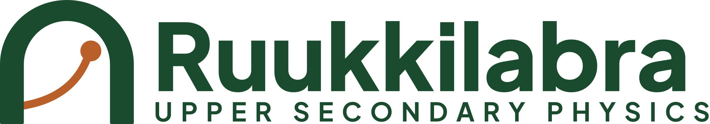

Investigate. Understand. Apply.
Upper secondary physics through investigation and experiment. Make a prediction, investigate the phenomenon with a simulation, build an explanation and test what you can do. The lessons follow the Finnish National Core Curriculum for Upper Secondary Schools 2019 (LOPS).
Latest lesson: Free-body diagrams and the combined effect of forces (FY4)
How a lesson works
- Think about ita phenomenon and the question the chapter answers
- Predictcommit to your own prediction before the results
- Investigateexperiment with a simulation or data and record what you see
- Theory summarythe explanation and the formula are built from the observations
- Applyuse the model in a new situation
- Check your understandingtest what you can do; the exercises are at the end of the chapter
How to get started
- Start from the first chapter of a module, or from the chapter your class is working on.
- Predict first: once you have committed to an answer, you notice what is surprising in the investigation.
- Use the simulation like an experiment: change one thing at a time and record what happens.
- Open an answer or a model solution only after you have tried yourself, and compare yours with it step by step.
- Do the core exercises; the others are extra practice, and level 3 is challenging application.
- At the end of a chapter, go on to Next chapter.
Modules
33 / 112 lessons ready Complete modules 3, modules in progress 1 and planned 4. The number counts published lessons, not your own progress. New lessons are published as they are completed.
FY1Physics as a natural science8 / 8 lessons ready completeFY2Physics, environment and society8 / 8 lessons ready completeFY3Energy and heat16 / 16 lessons ready completeFY4Force and motion1 / 16 lessons ready in progressFY5Periodic motion and waves16 lessons planned plannedFY6Electricity16 lessons planned plannedFY7Electromagnetism and light16 lessons planned plannedFY8Matter, radiation and quantisation16 lessons planned planned